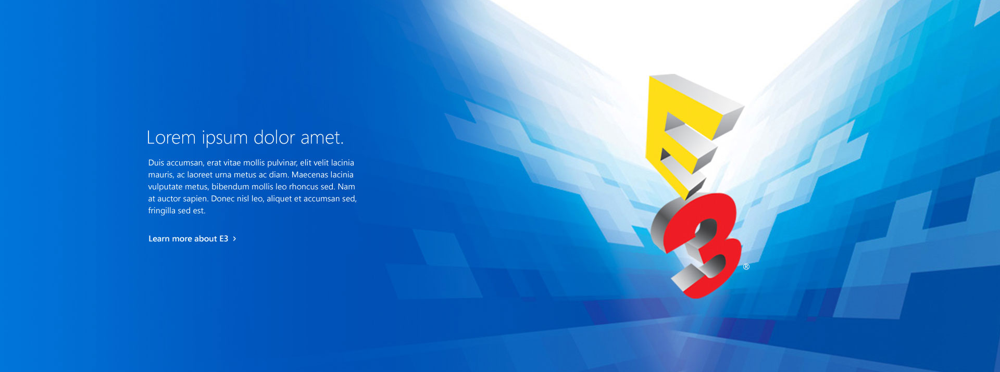
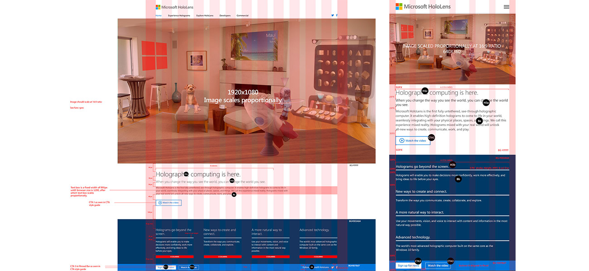
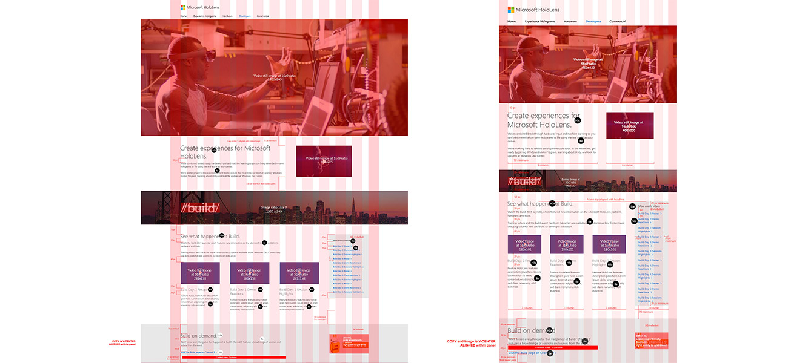

Microsoft Hololens
Production Design
Note
This was a fun project. Here's some example of the type of worked that I did for Hololens. Redlining, mockups, re-sizing (1920, 961, 960 and 640 screens) and image edits. I also had the opportunity to mock and designed a panel for the developer page. This required a lot of teamwork from the creative team. Check out the live site HERE.
Tool
Adobe Photoshop
  